Verstopte wc
€ 129
Btw inbegrepen. Verplaatsing en eerste uur inbegrepen. Op weekdagen, van 7 tot 18 uur.
BellenU legt het probleem uit, wij zeggen de prijs aan de telefoon, en die prijs betaalt u. Bevestigd aan de deur, voor de eerste minuut werk.
Met een foto gaat het sneller.
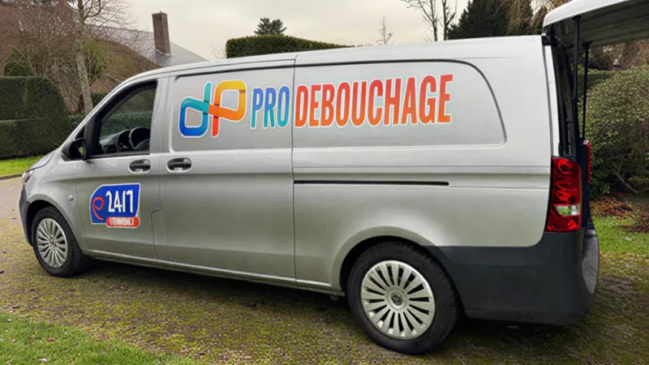
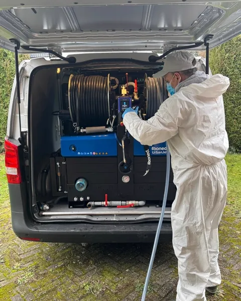
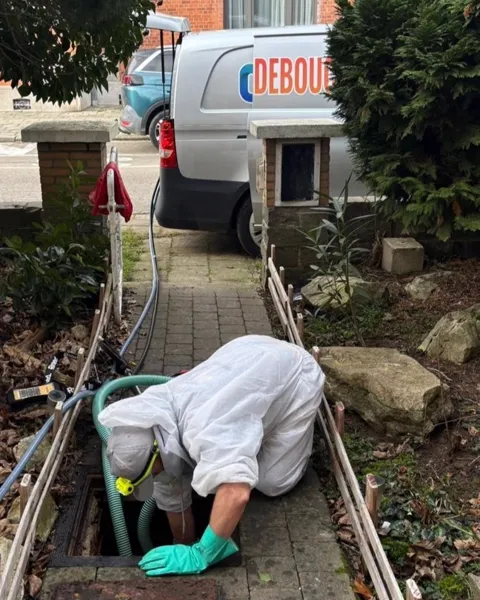
De prijzen
De werken die wij het meest doen, staan in deze lijst. Voor de rest krijgt u de prijs aan de telefoon, voor wij naar u vertrekken.
€ 129
Btw inbegrepen. Verplaatsing en eerste uur inbegrepen. Op weekdagen, van 7 tot 18 uur.
Bellen€ 119
Btw inbegrepen. Verplaatsing en eerste uur inbegrepen. Op weekdagen, van 7 tot 18 uur.
Bellen€ 199
Btw inbegrepen. Verplaatsing en eerste uur inbegrepen. Op weekdagen, van 7 tot 18 uur.
Bellen€ 249
Btw inbegrepen. Verplaatsing en eerste uur inbegrepen. Op weekdagen, van 7 tot 18 uur.
Bellen€ 229
Btw inbegrepen. Verplaatsing en eerste uur inbegrepen. Op weekdagen, van 7 tot 18 uur.
BellenSeptische put, ingegraven leiding, grote werken: leg het probleem uit, u krijgt meteen een eerlijke prijs.
Bel 0480 649 649Avond (18 tot 22 uur) en zaterdag: +50%. Nacht, zondag en feestdagen: +75%. De toeslag hoort u aan de telefoon, voor wij naar u vertrekken.
Camera-inspectie: elders vaak € 120 tot € 180, bij ons zit ze in de prijs van de ontstopping. Inspectie alleen, met verslag: € 149.
Lukt de ontstopping niet, dan betaalt u de verplaatsingskosten, € 60, en niets anders.
Garantie 1 maand op de ontstopping. Raakt dezelfde leiding binnen 30 dagen opnieuw verstopt, dan komen wij gratis terug.
Btw: 6% als uw woning ouder is dan 10 jaar (het meest voorkomende geval), anders 21%, zoals voor bedrijven. De prijzen hierboven zijn inclusief 6% btw; geldt het tarief van 21%, dan hoort u dat aan de telefoon.
De prijs die u aan de telefoon hoort, staat op de factuur.
Zo werkt het
Wij stellen twee of drie vragen. Een foto via WhatsApp helpt.
Aan de telefoon, voor wij naar u vertrekken. 's Avonds en in het weekend zit de toeslag al in de prijs die u hoort.
U krijgt een uur waarop wij er zijn, en wij verwittigen u als het later wordt.
Is de situatie anders dan u beschreef, dan hoort u dat vooraf, niet op de factuur.
Wat wij doen
Wc, gootsteen, douche, afvoer. Wij komen met hogedruk en camera.
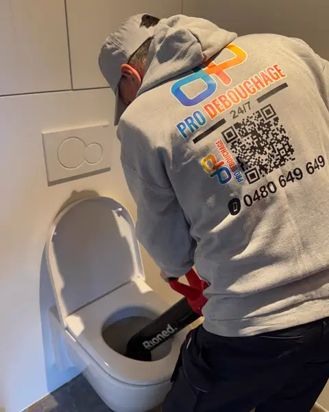
Het meest voorkomende geval. Vaak opgelost in één beurt.
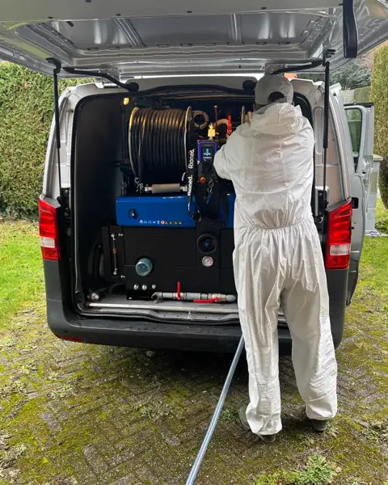
Wij maken de hele leiding proper, niet alleen de verstopping.
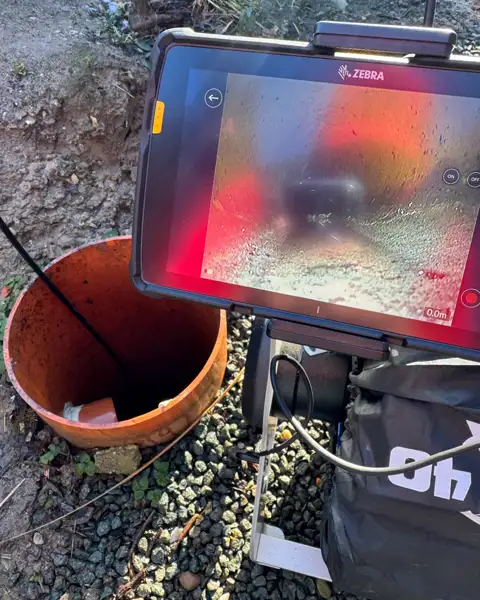
Wij filmen de binnenkant van de buis en u kijkt mee op het scherm. Inbegrepen bij de ontstopping.
Ledigen en nazicht. Op afspraak.
Leegpompen, schoonmaken, en een verslag voor uw verzekering als u daarom vraagt.
Wie komt er bij u langs
U belt, u spreekt met de persoon die het werk inplant. Afrem komt langs, in de bestelwagen die u hier ziet, met de inspectiecamera, de Rioned hogedrukmachine en de pomp. Een team van twee, samen 30 jaar in het vak: vastgoed, renovatie en sanitair. Het bedrijf is verzekerd voor beroepsaansprakelijkheid bij AG Insurance.
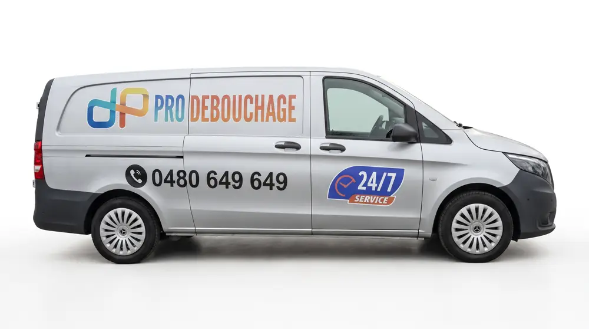
Wij kijken eerst met de camera. Breken is het laatste middel, en nooit zonder uw akkoord. Daarom zit ze inbegrepen bij de ontstopping.
Vraag het ons, en na de camera-inspectie maken wij een verslag dat u aan uw verzekering kunt bezorgen, bijvoorbeeld na waterschade.
Overschrijving, betaallink, of cash met een btw-bonnetje ter plaatse. Nooit een verzonnen bedrag aan de deur.
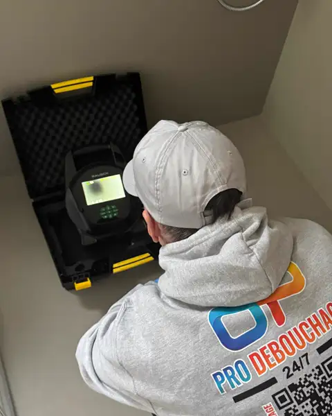
Het bewijs
Onze Google-pagina komt eraan. Na elke klus vragen wij u een eerlijke beoordeling, goed of slecht, en die komt hier ongewijzigd te staan. Intussen tonen wij ons werk.
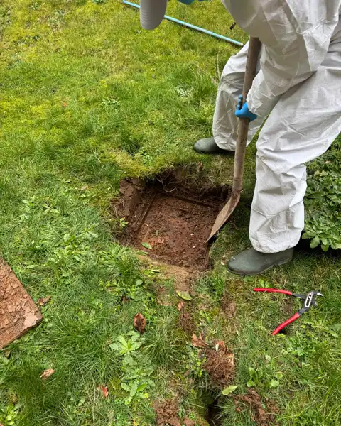
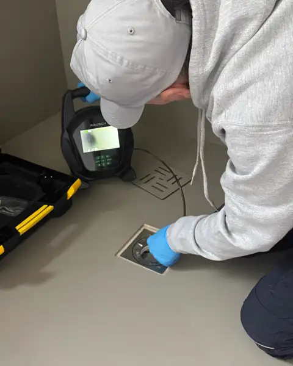
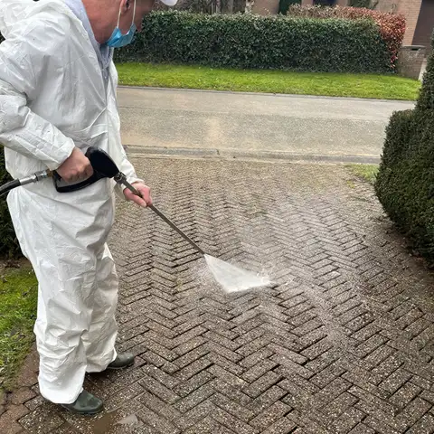
Ik heb op een zondagavond in juni gebeld, het toilet boven liep terug in de douche. Twee vragen aan de telefoon en ik kreeg meteen een prijs. Diezelfde prijs stond op de factuur, geen euro meer. Rond middernacht was hij weg en werkte alles weer. Het nummer hangt hier aan de koelkast.
De sterfput op de koer liep over na de regen in mei. Afspraak op dinsdag laat in de namiddag, hij was een halfuur later dan afgesproken, maar hij had wel gebeld om het te zeggen. Hij heeft eerst met de camera gekeken voor hij iets deed, en hij toonde mij de wortels op het scherm. De prijs was die van aan de telefoon.
Gootsteen verstopt sinds het weekend, ik had alles geprobeerd, ook de producten uit de winkel. Maandagochtend gebeld, afspraak dinsdag om 8 uur. Hij heeft de sifon losgemaakt, de leiding proper gemaakt en alles netjes teruggezet. Het bedrag van aan de telefoon veranderde niet, de factuur kreeg ik dezelfde dag.
Hebt u ons al laten komen? Een eerlijke beoordeling helpt ons meer dan een compliment.
Goed om weten
De regio Halle-Vilvoorde staat erom bekend. Vier signalen waarbij u beter ophangt:
Wij doen het omgekeerde. De prijs wordt aan de telefoon gezegd en aan de deur bevestigd, het adres en het ondernemingsnummer staan onderaan deze pagina, en u krijgt altijd een factuur.
Bel 0480 649 649Onze regio
Wij zitten in Vilvoorde en werken rond Brussel, in Vlaams-Brabant en Waals-Brabant, ongeveer 40 km rond Wemmel. Brussel-stad zit niet in onze regio.
Staat uw gemeente er niet bij? Bel even, u krijgt meteen ja of nee.
Uw vragen
Een verstopte wc kost € 129, een gootsteen, lavabo of douche € 119, een riool of sterfput met hogedruk € 199, een hogedrukreiniging € 249 tot 25 m, een kelder leegpompen € 229 voor het eerste uur. Btw inbegrepen, verplaatsing en eerste uur inbegrepen, op weekdagen van 7 tot 18 uur. Voor al de rest hoort u de prijs aan de telefoon voor wij naar u vertrekken.
Ja, en die staat hier. Avond (18 tot 22 uur) en zaterdag: +50%. Nacht, zondag en feestdagen: +75%. U hoort het aan de telefoon, voor wij beginnen.
Nee, de verplaatsing en het eerste uur zitten in de prijzen hierboven. Komen wij langs en lukt de ontstopping niet, dan betaalt u alleen de verplaatsingskosten, € 60.
U krijgt aan de telefoon een uur waarop wij er zijn, en wij verwittigen u als het later wordt. Wij zeggen liever een uur dat wij halen dan een cijfer dat goed klinkt.
Wij kijken eerst met de camera. Breken is het laatste middel, en nooit zonder uw akkoord. Daarom zit de camera in de prijs.
Ja, als u het vraagt. Na de camera-inspectie maken wij dan een verslag dat u aan uw verzekering kunt bezorgen, bijvoorbeeld na waterschade of een ondergelopen kelder. Zeg het gewoon aan de telefoon.
De ring rond Brussel, in Vlaams-Brabant en Waals-Brabant: Vilvoorde, Wemmel, Grimbergen, Dilbeek, Halle, Zaventem, Waterloo, Eigenbrakel, Waver, Nijvel en de andere gemeenten binnen ongeveer 40 km rond Wemmel. Brussel-stad zit niet in onze regio. Staat uw gemeente er niet bij? Bel even, u hoort het meteen.
Met overschrijving, met een betaallink, of cash met een btw-bonnetje ter plaatse. U krijgt altijd een factuur.
Bereikbaar 24 uur op 24 en 7 dagen op 7, ook in het weekend en op feestdagen. Gewoon nummer, geen betaalnummer.